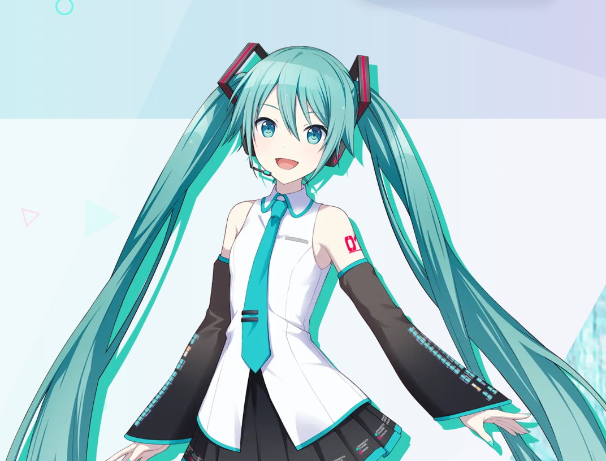

初音ミク誕生
歌声合成ソフトウェア「初音ミク」が登場。クリエイターのための歌声としてスタート。
世界で歌い続ける、デジタル・シンガー。

初音ミクは、クリプトン・フューチャー・メディアが展開するバーチャル・シンガーです。歌声合成ソフトウェアから始まった存在は、多くのクリエイターによる楽曲、イラスト、映像、ライブパフォーマンスを通して世界へ広がりました。
「誰か一人が完成させるキャラクター」ではなく、さまざまな創作が重なって新しい表現を生み出していくこと。それが初音ミクの大きな魅力です。
歌声合成ソフトウェア「初音ミク」が登場。クリエイターのための歌声としてスタート。
音楽だけでなく、イラスト、映像、二次創作など、多様な表現へと広がっていく。
3DCGによるライブパフォーマンスが大きく発展し、リアルな会場でファンと出会うようになる。
音楽・ライブ・ゲーム・アートなど、ジャンルと国境を越えて創作文化を広げ続けている。